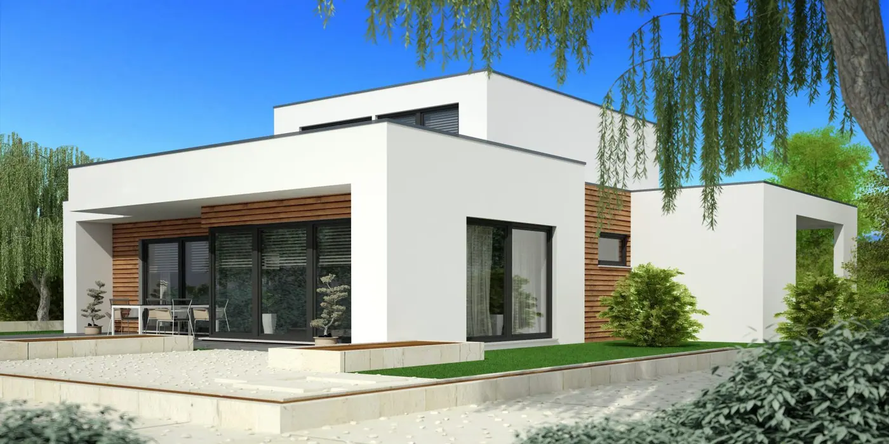

Mur og puss
Kalkpuss, reparasjon og puss av fasade – også på gamle og historiske bygg.
Bærum Mur og Flis AS er en murmesterbedrift med 17 ansatte. Vi fokuserer på at arbeidet blir utført riktig etter alle lover og standarder, samtidig som den gode servicen ivaretas.
0 av 18 stein
Fra puss og flis til betong, fasade og komplette baderom.
Kalkpuss, reparasjon og puss av fasade – også på gamle og historiske bygg.
Flislegging av bad, kjøkken og gulv, med riktig fall og fuging.
Støp, slipt betong og injisering av betong der det er skadet.
Fasadeformatering og utbedring – tilpasset byggets alder og uttrykk.
Baderom fra riving til ferdig flis, med egen rørleggeravdeling.
Vi har egen rørleggeravdeling i Bærum, så du slipper å koordinere flere.
Bilder fra jobber vi har gjort – flis, betong og puss.



Ring 67 54 22 22 eller send en henvendelse. Vi finner gode løsninger på de utfordringene vi kommer over.